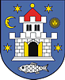
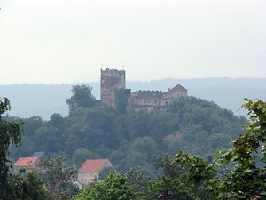
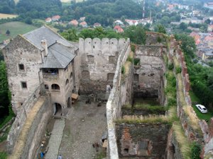
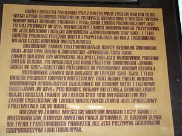
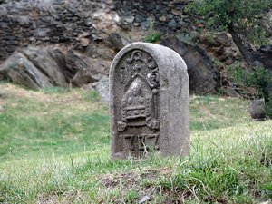
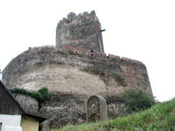
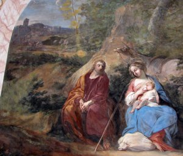

zamek Bolków
Zawsze będąc przejazdem w Bolkowie obiecywałem sobie, że kiedyś muszę w końcu zwiedzić bolkowski zamek, bo przecież był on kiedyś własnością krzeszowskich cystersów :-) W literaturze możemy znaleźć opis krzeszowskich losów bolkowskiego zamku, dla przykładu:
- w ostatnim numerze miesięcznika „Sudety” (Nr 7/2008) w stałym dziale „Sudeckie kalendarium” znajduje się opracowany przez Romualda Łuczyńskiego wykaz najważniejszych dat z historii Bolkowa. Dwie z nich związane są z Krzeszowem: 1703 – zamek kupili cystersi z Krzeszowa; 1810 – w wyniku sekularyzacji zamek stał się własnością państwa pruskiego.
- Dorota Kudera w książce „Krzeszów” na stronie 22 zamieszcza informację: „Opat Dominik Geyer z Nysy za udzielenie pożyczki w wysokości 142 tys. talarów otrzymuje od rodu von Zedlitz zamek w Bolkowie wraz z przynależnymi dobrami (13 wsi)”.
- Natomiast Witold Papierniak w swoim opracowaniu wspomina o bolkowskim zamku: „W roku 1703 otrzymali go wraz z 13 wioskami w zamian za pożyczkę w wysokości 142 tys. talarów udzieloną rodzinom Schaffgotschów i Zedlitzów. Bolków pozostawał we władaniu cystersów do roku 1810”.
Jak widać bolkowski zamek był przez 107 lat w posiadaniu krzeszowskich cystersów - dlatego też postanowiłem zwiedzić go w poszukiwaniu czegoś co by o tym fakcie przypominało. Okazja taka nadarzyła mi się w niedzielę 13 lipca 2008 roku, kiedy to będąc przejazdem w Bolkowie miałem na tyle wolnego czasu aby wraz z moją siostrzenicą zwiedzić zamek.
|  | Tak widać zamek zaraz po wjechaniu do Bolkowa od strony Jawora. Choć oczywiście trochę trzeba skorzystać w aparacie z funkcji ZOOM :-) |
|  | Tutaj widok z zamkowej wieży (zgodnie z opisem zamku z "wielkiej wieży") na zamek. Po lewej stronie tzw. "dom niewiast" w którym mieści się muzeum, po prawej dawna część mieszkalno-gospodarcza. |
|  | Na tablicy informacyjnej umieszczonej przy wejściu do muzeum w opisie zamku możemy przeczytać: "W latach 1703-1810 właścicielem był zakon cystersów". Wewnątrz jednej z muzealnych sal znajdziemy opis zamku z informacją: "W 1703 roku zostaje zakupiony przez Cystersów z Krzeszowa. Po sekularyzacji zakonu w 1810 roku przechodzi na własność skarbu państwa". |
|  | A tutaj jedyny krzeszowski akcent jaki udało mi się znaleźć (poza opisami) na terenie bolkowskiego zamku: kamienny słupek wyznaczający granice posiadłości cystersów. Na czole widać pośrodku mitrę i pastorał, nad nimi litery IAG (Innocentius Abbas Grissoviensis - Innocenty opat krzeszowski), na dole data 1727. |
|  | I jeszcze widok na bolkowski cysterski słupek graniczny na tle zamkowych murów i wieży. |
|  | Kolejne zdjęcie, wykonane również 13 lipca 2008 roku, przedstawia zamek bolkowski widoczny w krzeszowskim kościele św. Józefa. Jest to fresk "Odpoczynek w czasie ucieczki" gdzie w tle widać wieżę zamkową z charakterystycznym "dziobem" - a jest to jedyna taka wieża w Sudetach. Dlatego też można stwierdzić, że na tym krzeszowskim fresku widać bolkowski zamek (na podstawie Witold Papierniak "Opis kościoła św. Józefa" ). |

{kind=link}
{kind=link}
{kind=link}
{kind=link}
{kind=link}
{kind=link}